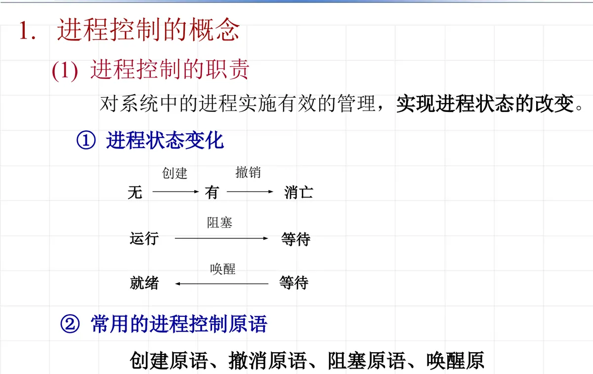
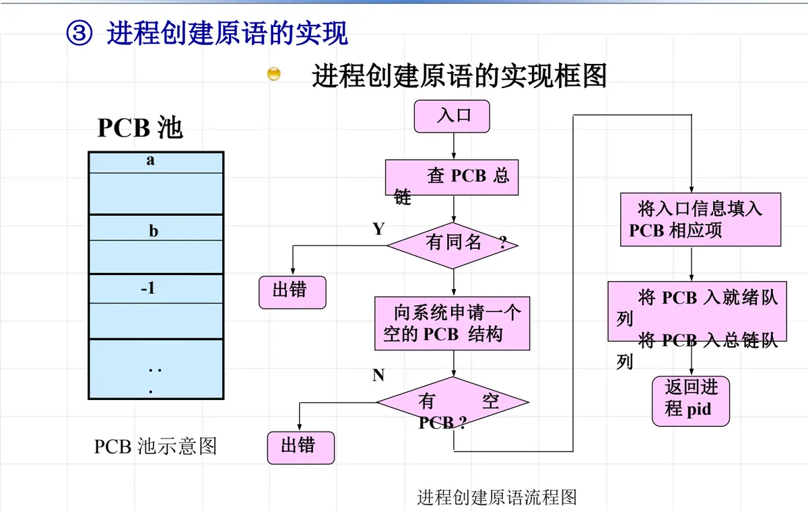
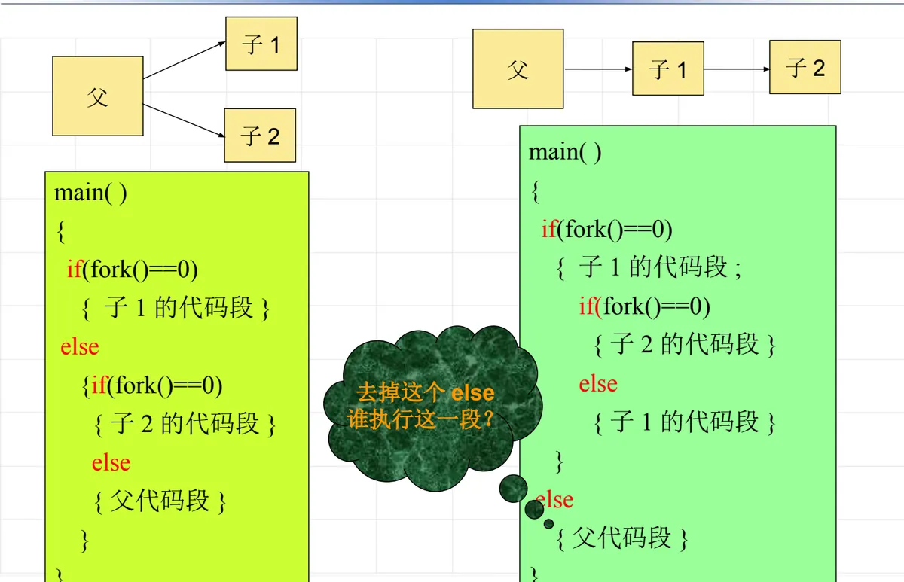
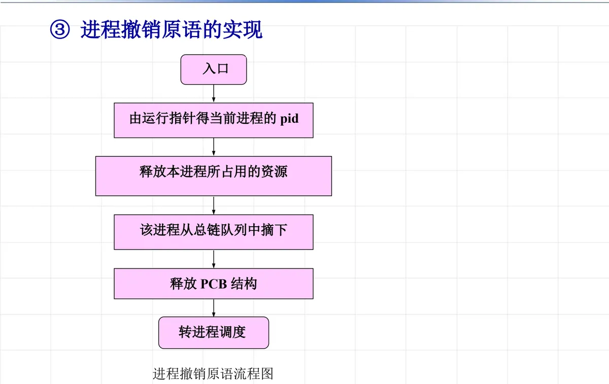
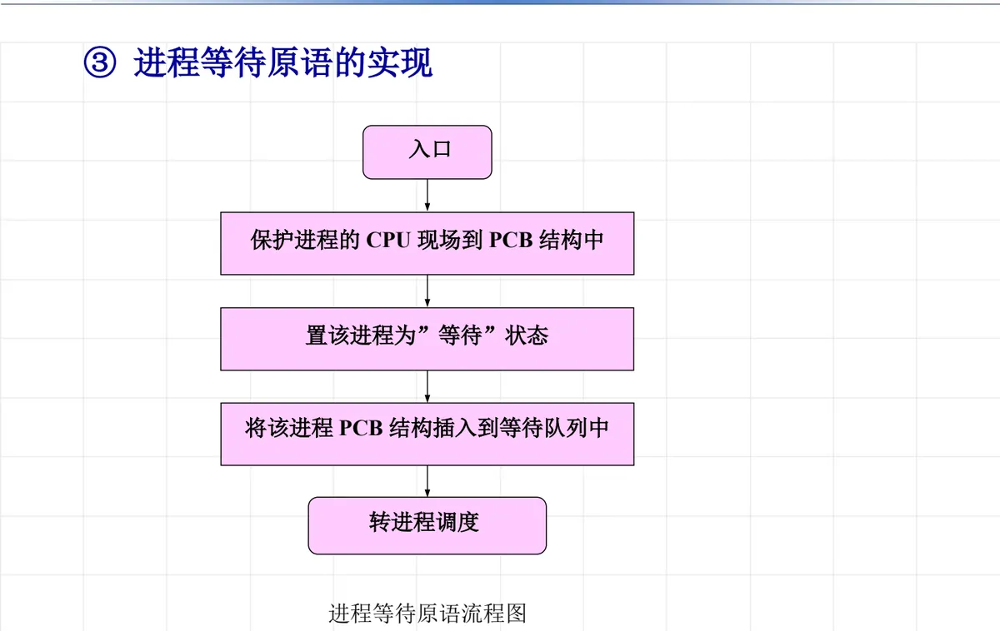
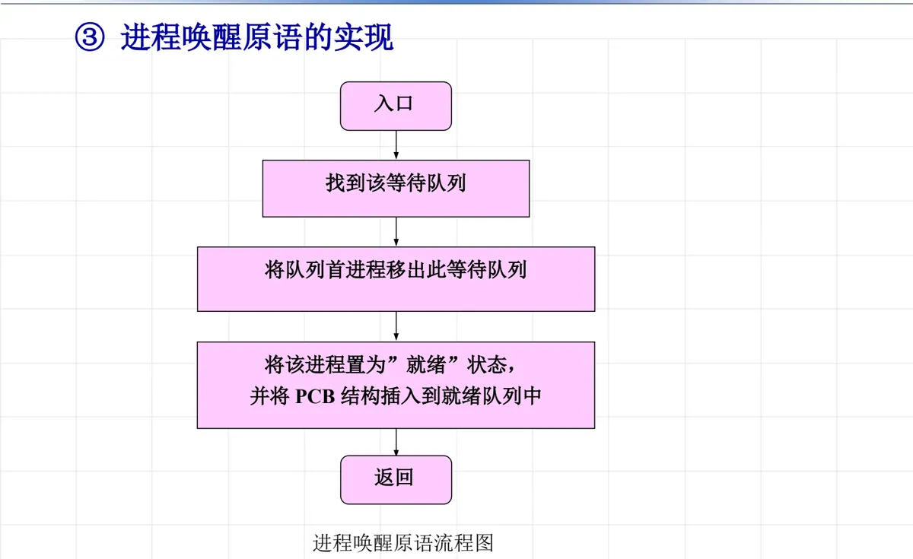

操作系统原理 · 第 4 章 进程及进程管理
4.3 进程控制
上一节讲了进程是什么、有哪些状态、用什么数据结构描述它。这一节回答「谁来改变这些状态」：进程从创建到撤销的全过程，都由操作系统提供的进程控制原语来完成。原语是执行时不可被中断的过程，创建、撤销、阻塞、唤醒四种原语正好对应进程状态变迁图中的四条路径。下面先看总的概念，再逐个看原语的功能与实现，并落到 UNIX/Linux 的 fork、exec、exit、kill 等系统调用上。
1. 进程控制的概念与原语
进程控制就是对进程的生命周期进行管理。把上一节的状态变迁图换一个角度看，每条变迁路径都由一个控制原语负责，而进程本身的「有无」也由原语决定：
- 创建原语：让进程从「无」到「有」；
- 撤销原语：让进程从「有」到「无」，即消亡；
- 阻塞原语：使进程由运行状态转入等待状态；
- 唤醒原语：当事件来到时使进程由等待状态转入就绪状态；
- 而就绪到运行的这一步由进程调度完成（属于第 6 章的内容）。
因此，常用的进程控制原语就是创建原语、撤消原语、阻塞原语、唤醒原语四种。之所以做成「原语」，是因为它们要修改内核中的关键数据结构（PCB 队列），执行过程中绝不能被中断，否则系统状态会不一致。

2. 进程创建
（1）创建原语的参数与功能
创建原语接受两个主要参数：name 为被创建进程的标识符，priority 为进程优先级。它的功能是：创建一个具有指定标识符的进程，建立进程的 PCB 结构。
（2）进程创建原语的实现
创建原语的实现围绕这张流程图展开，核心是「先拿到一个空 PCB，再把入口信息填进去，然后挂到队列上」：
- （1）入口；
- （2）向系统申请一个空的 PCB 结构：若 PCB 池中没有空 PCB，则出错返回；
- （3）将入口信息填入 PCB 的相应项；
- （4）查 PCB 总链：若有同名进程，则出错（返回 −1）；
- （5）否则将 PCB 入总链队列，再将 PCB 入就绪队列；
- （6）返回进程 pid。

（3）UNIX/Linux 下的进程创建：fork
UNIX/Linux 用系统调用 pid_t fork(void) 配合 exec(...) 系列函数来创建并启动进程。调用形式很简单：
int pid = fork();它的功能是创建一个子进程，被创建的子进程是父进程的进程映像的一个副本（除 PCB 外）。在 UNIX 系统中，除了 init 进程（pid 等于 1）外，其他进程都是通过调用进程创建系统调用创建的。
返回值是 fork 最需要留意的设计，同一个调用在两条执行路径上返回不同的值：
- −1：创建失败；
- 0：从子进程返回；
- > 0：从父进程返回，且返回值为子进程号。
正因如此，程序中才能用 if (pid == 0) 区分父子两条通路：
pid = fork();
if (pid == -1) { printf("fork fail\n"); return; }
if (pid == 0)
printf("I'm the child process!\n");
else
printf("I'm the parent process!\n");
printf("I'm common code.\n");（4）系统调用 fork 完成的操作
UNIX/Linux 系统的核心为 fork 完成下列操作：
- ① 为子进程分配一个新的 PCB 结构；
- ② 为子进程赋一个唯一的进程标识号（PID）；
- ③ 子进程复制父进程下列属性：权限相关（用户 id、组 id）；当前工作目录、根目录；信号屏蔽设置和动作；所有环境变量；所有内存（代码段、数据段、栈、堆等）；所有已经打开的文件句柄；
- ④ 对父进程返回子进程的进程号，对子进程返回零。
（5）fork 程序的执行结构与输出次序
fork 之后父子进程并发执行，谁先谁后由调度决定，因此输出次序不可预知。把第二个 fork 放在不同的分支里，得到的进程树就不同：
main()
{
if (fork() == 0)
{ 子1的代码段 }
else
{ if (fork() == 0)
{ 子2的代码段 }
else
{ 父代码段 }
}
}另一种写法是把第二个 fork 放进子进程的分支里：
main()
{
if (fork() == 0)
{ 子1的代码段;
if (fork() == 0)
{ 子2的代码段 }
else
{ 子1的代码段 }
}
else
{ 父代码段 }
}
原课件在这一页留了两个思考问题：「插入 else 呢？」「去掉这个 else，谁执行这一段？」——这正是理解 fork 的关键：else 的位置决定了某段代码是被父进程执行、被所有子进程执行，还是被父子共同执行。
同样的道理也适用于带 printf 的程序：由于父子进程都会继续执行 fork 之后的语句，输出既可能按父先子后的次序出现，也可能反过来，可能的排列如 i=5、i=10、i=7（原课件列出了 5-10-7、7-5-10、5-7-10 三种），并且还附有「fork error」与「插入 else 呢？」两个提示。
（6）exec：启动一个新程序运行
exec() 与 fork 配合使用，作用是更换进程执行代码，更换正文段、数据段——进程还是同一个（PCB 不变），跑的却已经是另一个程序了。调用格式为 exec(文件名，参数表，环境变量表)，例如：
execlp("/bin/ls", arg0, arg1, arg2, NULL);
execvp("ls", arg[]);下面的例子能看出 exec 的「替换」性质：
main()
{
if (fork() == 0)
{ printf("a");
execlp("file1", 0);
printf("b");
}
printf("c");
}其中 file1 是：
main()
{
printf("d");
}由于 execlp 成功之后子进程的代码被 file1 完全替换，它后面的 printf("b") 永远不会执行；而父进程与子进程的输出又会相互交错，所以输出只能是 a、c、d 的各种可能次序（acd、cad、adc），含 b 的组合（abdc、adbcc）不可能出现——原课件正是用这几个候选答案来检查读者是否真的理解了 exec。
3. 进程撤销
（1）进程撤销的原因
- 进程正常运行结束；
- 进程运行中出错，如执行了非法指令、在常态下执行了特权指令、运行时间超越了分给的最大时间段、申请的内存超过了系统能提供的最大量、越界错误等；
- 操作员或操作系统干预；
- 父进程撤销其子进程；
- 父进程撤销（子进程随之被撤销）；
- 操作系统终止。
（2）进程撤销原语的功能
撤消当前运行的进程：将该进程的 PCB 结构归还到 PCB 资源池，所占用的资源归还给父进程，从总链队列中摘除它，然后转进程调度程序。
（3）进程撤销原语的实现
- （1）入口；
- （2）由运行指针得当前进程的 pid；
- （3）释放本进程所占用的资源；
- （4）将该进程从总链队列中摘下；
- （5）释放 PCB 结构；
- （6）转进程调度。

（4）Linux 下进程撤销的实现
- 进程自己正常结束退出：
main()函数返回，或调用exit()； - 其他进程撤销的情况都是通过信号（signal）实现，例如
kill。
4. 进程等待
进程等待原语的功能是：中止调用进程的执行，并加入到等待 chan 的等待队列中，最后使控制转向进程调度。它的实现步骤是：
- （1）入口；
- （2）保护进程的 CPU 现场到 PCB 结构中；
- （3）置该进程为「等待」状态；
- （4）将该进程的 PCB 结构插入到等待队列中；
- （5）转进程调度。

注意第（2）步与第（5）步的配合：现场被保存到 PCB 的 CPU 现场保护区里，进程让出处理机；将来它被唤醒并再次获得 CPU 时，正是靠这块现场信息回到断点继续执行。
5. 进程唤醒
进程唤醒原语的功能是：当进程等待的事件发生时，唤醒等待该事件的进程。它的实现步骤是：
- （1）入口；
- （2）找到该等待队列；
- （3）将队列首进程移出此等待队列；
- （4）将该进程置为「就绪」状态，并将 PCB 结构插入到就绪队列中；
- （5）返回。

把等待与唤醒放在一起看，它们是一对反向操作：等待把自己从运行队列挪进等待队列并让出 CPU，唤醒把对方从等待队列挪进就绪队列；前者由进程自己调用，后者由发现事件发生的进程（或中断处理程序）调用。
6. Linux 下的等待与唤醒
Linux 下进程等待／唤醒的情形比较多，每一种情况等待和唤醒的系统调用都不一样，主要有：
- 锁、信号量；
- 等待子进程退出：
wait()或waitpid()； sleep；read／write：文件读／写；select、poll、epoll。
这些系统调用对上层程序是不同功能，但在内核里走的都是本节的同一套机制：把进程挂到某个等待队列上、等事件到来再唤醒。第 4.6 节讲进程互斥与同步的实现时，会看到锁与信号量正是建立在这套等待／唤醒原语之上的。
本节小结
- 进程控制由操作系统提供的原语完成：创建原语（由无到有）、撤销原语（由有到无）、阻塞原语（运行→等待）、唤醒原语（等待→就绪）；就绪→运行由进程调度负责。
- 创建原语以 name（标识符）和 priority（优先级）为参数，功能是建立进程的 PCB 结构；实现顺序是申请空 PCB、填入入口信息、查总链排除同名、入总链队列与就绪队列、返回 pid。
- UNIX/Linux 用 fork 创建进程：子进程是父进程映像的副本（除 PCB 外），返回值为 −1 表示失败、0 表示从子进程返回、大于 0 表示从父进程返回且为子进程号；核心为 fork 分配新 PCB、赋唯一 PID、复制权限与环境等属性。
- fork 之后父子进程并发执行，输出次序不可预知；else 的位置决定某段代码由谁执行——插入或去掉 else 会改变进程树与执行结果。
- exec 用新程序替换进程的执行代码（正文段、数据段），调用格式为 exec(文件名，参数表，环境变量表)；exec 成功后的后续语句不会被执行。
- 撤销原语释放资源、从总链摘下 PCB 并归还 PCB 池、转进程调度；撤销原因包括正常结束、运行出错、操作员或系统干预、父进程撤销子进程、父进程撤销、操作系统终止；Linux 下正常退出用 exit，其他撤销靠信号（kill）。
- 等待原语把 CPU 现场保护进 PCB、置等待状态、挂入等待队列后转调度；唤醒原语在事件发生时把等待队列首进程置为就绪并插入就绪队列。Linux 下的锁、信号量、wait/waitpid、sleep、read/write、select/poll/epoll 都是这套机制的应用。